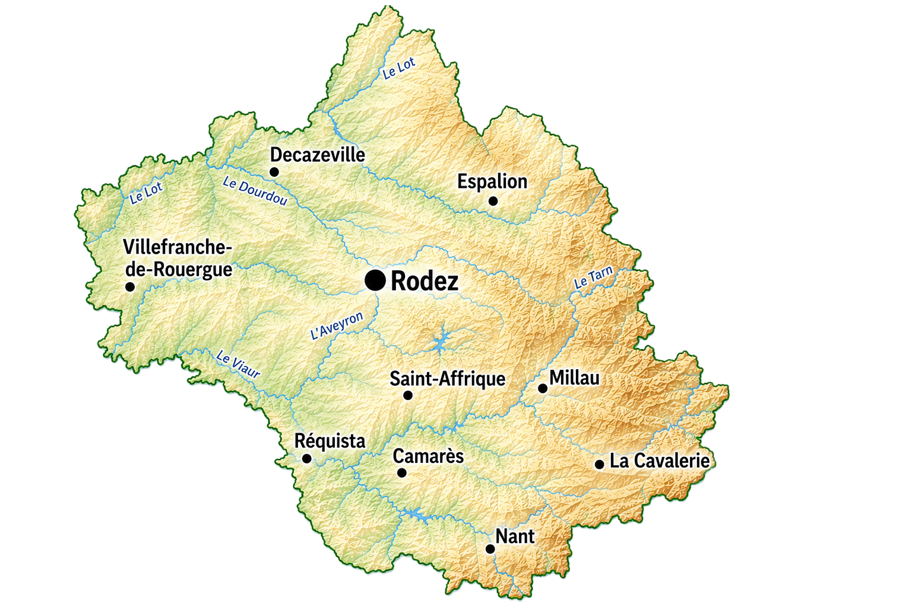
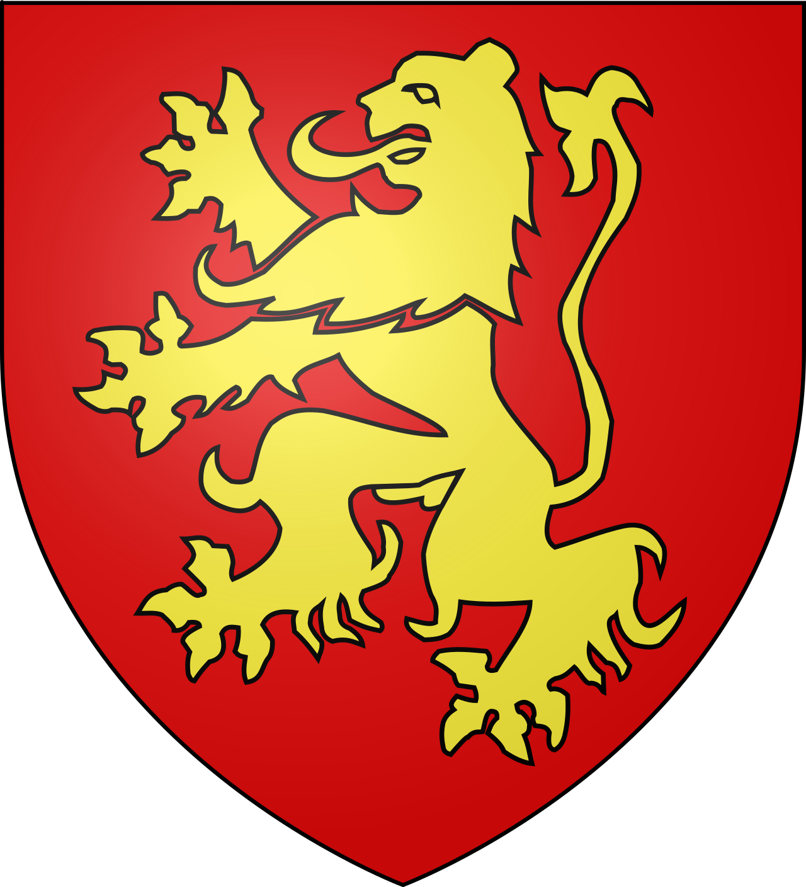
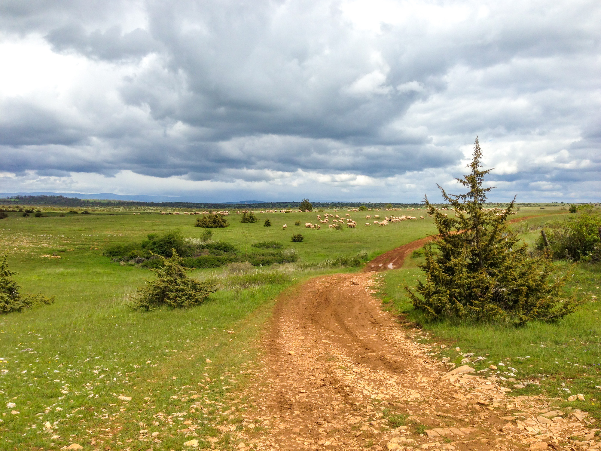

Le Causse Comtal est un plateau calcaire situé au nord de Rodez, dans le triangle formé par Rodez, Bozouls et Marcillac-Vallon, jusqu'à Muret-le-Château qui en marque la limite nord. Sous-ensemble des Grands Causses, il forme une sorte de pont sédimentaire entre les Causses du Quercy à l'ouest et les Grands Causses à l'est.
Son nom lui vient des comtes de Rodez qui y cultivaient autrefois le blé, lui valant le surnom de « grenier à blé » du comté. À la différence des Grands Causses voisins, le Causse Comtal ne donne pas cette impression de grands espaces désertiques : l'alternance entre causse sec et avant-causses, entre marnes et calcaires, y dessine des terroirs plus variés et plus habités.
Traversé par le Dourdou, il est entouré au nord par le Rougier de Marcillac et la vallée du Lot, à l'ouest par la dépression de Clairvaux et les reliefs du Ségala, au sud par la vallée de l'Aveyron et les monts du Lévezou.

Le plateau repose sur des formations calcaires du Jurassique inférieur et moyen, séparées par une couche de marnes qui conditionne deux niveaux aquifères distincts. Ces couches recouvrent un socle paléozoïque de grès, d'argilites carbonifères et permiennes et de roches cristallines.
Le relief karstique est structuré par un jeu de failles inverses est-ouest, héritées de la compression pyrénéenne. Ces failles favorisent l'apparition de points d'eau en surface et conditionnent, depuis toujours, l'implantation des villages et hameaux du causse.
Le phénomène géologique le plus spectaculaire du secteur reste le Trou de Bozouls : un canyon en forme de fer à cheval, creusé dans le calcaire par le Dourdou, dont les falaises tombent à environ 100 mètres au-dessus de la rivière. Un tel creusement dans le calcaire nécessite l'apport d'eau constant d'une rivière exogène, ce qui en fait une curiosité géologique remarquable dans le paysage caussenard.
Pelouses sèches et genévriers : la végétation du causse « sec », au centre du plateau, est aujourd'hui occupée par des landes de genévriers rases, typiques des sols calcaires peu profonds.
Élevage ovin : les troupeaux de brebis pâturent encore une grande partie du plateau, entretenant les pelouses sèches caractéristiques du paysage caussenard.
Espaces naturels sensibles : une partie du Causse Comtal est inscrite aux Espaces Naturels Sensibles de l'Aveyron, préservant ce patrimoine paysager et écologique.
Accès : depuis Rodez, prendre la D988 en direction de Sébazac-Concourès puis Bezonnes, à environ 6,5 km.
Meilleure période : le causse se parcourt toute l'année ; les randonnées hivernales y sont particulièrement appréciées pour la douceur du relief.
Villages-portes : Bezonnes, Sébazac-Concourès, Muret-le-Château, Salles-la-Source et Bozouls, célèbre pour son canyon.